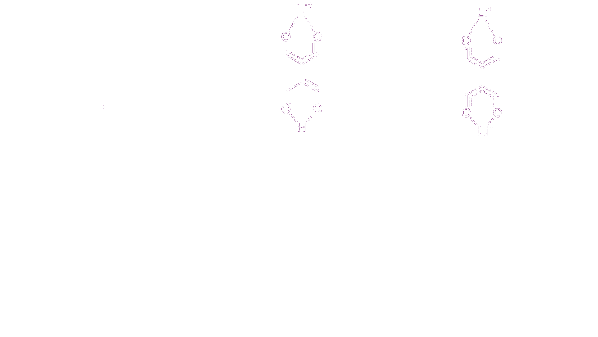
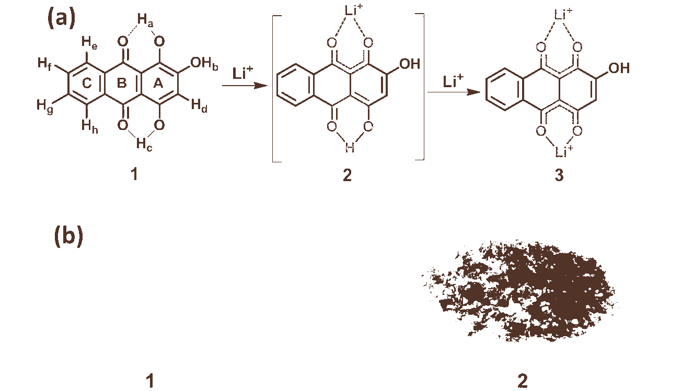
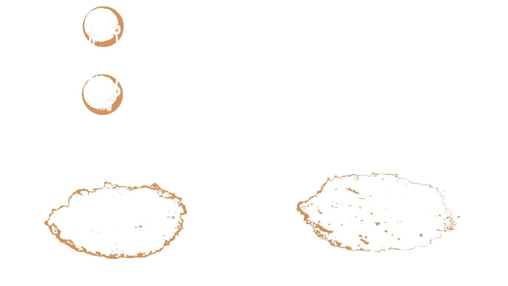
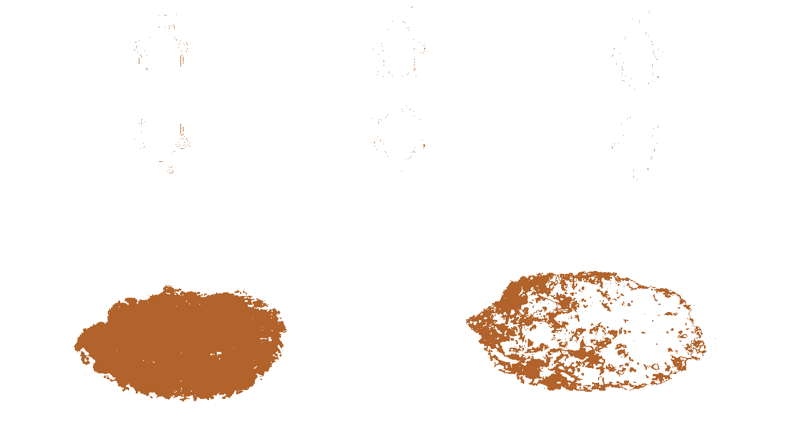

(a) Cyclic voltammograms of purpurin electrode in 1 M solution of LiPF 6 in 1:1 (v/v) mixture of ethylene carbonate (EC) and dimethyl carbonate (DMC) as the electrolyte with Li as counter and reference electrode (scan rate: 0.1 mVs −1). (b) Voltage vs specific charge-discharge capacity of purpurin electrode cycled at a C/20 rate between 3.7 V and 1.5 V vs Li/Li + in 1 M solution of LiPF 6 in 1:1 (v/v) mixture of ethylene carbonate (EC) and dimethyl carbonate (DMC) as the electrolyte. (c) The voltage profiles of purpurin at different current rates (C/2, C/10 and C/20). The first charge/discharge curves are presented in the plot and (d) Voltage vs specific charge-discharge capacity of CLP electrode cycled at a C/20 rate between 3.7 V and 1.5 V vs Li/Li + in 1 M solution of LiPF 6 in 1:1 (v/v) mixture of ethylene carbonate (EC) and dimethyl carbonate (DMC) as the electrolyte. Inset: Variation in discharge capacity vs cycle number for the CLP electrode.
Figure 1
(a) Schematic illustration of sequence of lithiation/de-lithiation mechanism in the purpurin molecule: (1) Molecular structure of pristine purpurin; (2) Intermediate of lithiated purpurin, and (3) Binding of lithium ion with carbonyl and hydroxyl groups of purpurin at C-1 (–OH a) and C-4 (–OH c) respectively. (b) Photograph of (1) pristine purpurin and (2) Chemically lithiated purpurin (1:2 ratio).
Figure 2




The expanded 1H-NMR spectrum recorded in DMSO- d 6 at 500 MHz at 25°C. (a) Pristine purpurin; (b) Lithiated purpurin electrode [ELP-1] (Cells were discharged (lithiated) from open circuit voltage to 1.5 V vs Li/Li + in 1 M solution of LiPF 6 in 1:1 (v/v) mixture of ethylene carbonate (EC) and dimethyl carbonate (DMC) as electrolyte); (c) Lithiated purpurin electrode [ELP-2] (Cells were discharged (lithiated) from open circuit voltage to 0.02 V in 1 M solution of LiPF 6 in 1:1 (v/v) mixture of EC and DMC as electrolyte) and (d) CLP using LiOAc as Li + source (1:1) and (e) CLP using LiOAc as Li + source (1:2).
Figure 3
The expanded 13C DEPT-135 NMR spectrum recorded in DMSO- d 6 at 125 MHz at 25°C. (a) Pristine purpurin; (b) ELP-1; (c) ELP-2 and (d) CLP (1:2 ratio). In DEPT 135, 13C signals arising due to methyl (–CH 3) &; methine (–CH) appear positive, methylene as negative (–CH 2) whereas no quaternary carbons show up. The progress of lithiation and its corresponding carbon chemical shifts were examined. The inset shows the molecular structure of purpurin with carbon labeling as C a–C d respectively.
Figure 4
(a) UV/vis absorption titration curves of purpurin (1×10 −4 M) with addition of LiOAc (1×10 −4 M) in methanol at 298 K. The ratio of purpurin with LiOAc was changed throughout the titration in different ratios, starting from 20:0 to 4:16 (top to bottom), and change in absorption curves were pointed out by arrows and (b) FT-IR (ATR) spectrum of purpurin (black) and ELP-1 (red). The inset shows an expanded view, where the existence of new absorption bands for carbonyl groups is clearly visible and point out by arrow.